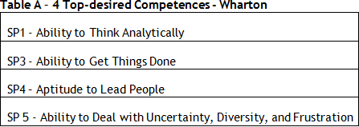
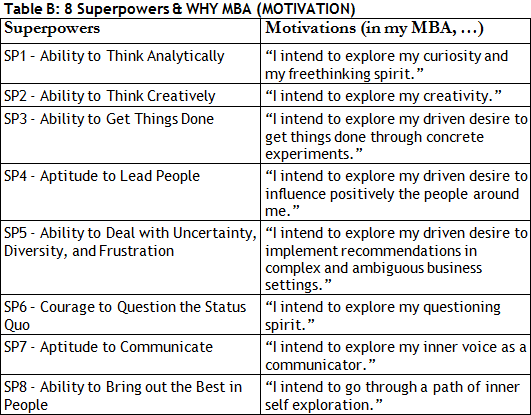
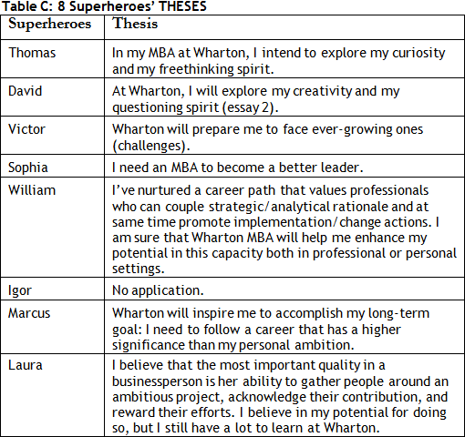

DISCLAIMER: Km 31 (Stanford)/ Km 32 (HBS) offered you guidance in assembling your first/second essay packages.
The following dialogue helps you put together your third package, Wharton (see).
Even if you’re not applying to Stanford/HBS, review carefully the comments made on how to assemble these initial essay packages. This reading will allow you to better enjoy the following dialogue.

Before we discuss their essays, we should recall that in order to build your Wharton package, you must have done the Big Synthesis Exercise and reflected upon the feedback of your 3 Wise Men.


Relax, Megaron. After our BSM (Big Synthesis Meeting) I obtained my friends’ feedback. I am ready to build the 00 version of Wharton.

You’ve already built your Big Synthesis - 3 Stories with 700 words each (2,100 total). Now you have to deal with further restriction, the word limit imposed by each school.
Right. I saw on the internet that many consultants analyze the essay questions of several b-schools. What’s your opinion on that?
The analyses on essay topics will give you an insight into HOW to answer a specific question, BUT they cannot help you answer the WHY, the inquiring element that brings SYNTHESIS to your sale. In other words, do not waste too much time analyzing the questions if you do not know what you’re selling. Having said that, I think many admissions consultants offer good analyses of essay topics. I recommend:
Although their recommendations are quite generic, it was worth reading. Thanks for the suggestion.
Sure. Now let’s move on to the essays. The exercise is simple as long as you know what you’re selling. Now all you have to do is put them together, connect them. Read the set of questions carefully, Wharton.
- Essay 1: (Required) What do you hope to gain professionally from the Wharton MBA? (500 words)
- Essay 2: (Required) Describe an impactful experience or accomplishment that is not reflected elsewhere in your application. How will you use what you learned through that experience to contribute to the Wharton community? (500 words)
Could you show me concretely how I can adapt my 3 Stories to Wharton’s questions? I have only 1000 words to answer these 2 questions.
The first step is to understand that you should begin by essay 1. This task asks you to tell your 3 STORIES (+ WHY MBA, Km 26 + WHY Wharton, Km 27). The 3 STORIES that will justify your decision to pursue an MBA.
The problem is the lack of room. Since I will write 3 STORIES (Why MBA + Why Wharton) in only 500 words, it is impossible to describe my 3 Competences.
The most effective solution is to write in essay 1 only the 2 STORIES (emphasis on 2 Competences) more directly related to your post-MBA career. You can leave the third for essay 2.
All 8 Heroes discussed their careers in paragraph 1 (Controlling Idea).
Exactly, they did. You cannot make the classical mistake of explaining WHY MBA without discussing your career plan (read again WHY MBA, Km 26. However, observe that not all heroes opened their essays explaining their post-MBA career.
That is true. Thomas, for example, only mentioned his post-MBA plan at the very end, in the last paragraph. (“I intend to replicate such situations, but with a broader repercussion. I intend to set up a financial institution whose step stone lies on the rigor of analysis that only Knowledge can provide.”)
Indeed and his approach was successful. He answered what was asked and concluded his writing with his plan, his WHY MBA, and WHY Wharton.
OK, I get it. The format is less important. The message is I must explore my career in essay 1.
You do.
I have noticed that some barely touched WHY Wharton. They focused on WHY MBA.
Well, because of the scarce word limit, I believe it is more relevant to clarify WHY MBA than WHY Wharton. Furthermore, you have the essay 2 for more WHY WHARTON.
We cannot make the “Rule 99” mistake (WHY MBA, Km 26).
Well said.
Ok, but here comes the inevitable question: “which of the 8 Competences does Wharton like to see in the stories of its applicants?” I hope the school wants the 3 Competences that I have already explored in the Big Synthesis Exercise.
The 4 Competences below are the most interesting to be explored in both essays 1 and 2 – see Table A below.

Great. Essay 1 is quite similar to essay 2 for Stanford, one that we have already discussed.
Exactly, Nicholas. My main concern is that in explaining how Wharton will help you reach your personal and professional goals, you do not write generic stuff.
I don’t think I would make this mistake. You were highly emphatic on WHY MBA (Km 26) + WHY Wharton (Km 27). They do not want me to pay compliments to Wharton. Instead, I should find a link between my values and those of the school.
It seems obvious that the AdCom does not want or need to know about Wharton. They want to know you.
And to make that happen, I need to present concrete events of my past that offer sound evidence to my thesis.
Well said, Nicholas. Observe William’s objective thesis: “I need an experiential learning environment.”
Indeed, along the way he even managed to tell about his adventurous grandfather.
Yes, and he continues to explore concrete evidence in his Why School from Question 2.
You bet, Megaron. Now, more than ever, I understand the importance of knowing how to sell what I want from an MBA. If you don’t know what you’re selling, it is difficult, not to say impossible, to explain all that in 500 words.
Don’t forget that we still have Essay 2 to write.
True, I can sell Why MBA and Why Wharton in Essay 2.
Precisely.
In that case, should I copy and paste my #8 essay (SP8, Ability to Bring out the Best in People) and add WHY Wharton at the end?
Good question... I believe it will depend on whether you really have a great story in SP8. If that is not the case, I would rather you chose another superpower and adapted to the purpose of Essay 2. Perhaps, it would be even better to explore your #4 essay, Leadership, in Essay 2. Obviously, you can do that as long as you have not used it in Essay 1.
Right. I need to think. The real problem, as I see it, is WHY MBA.
If you can explain Why MBA, it is easy to sell WHY WHARTON. Always go back to Table B below (for further details on how to sell your WHY-MBA and WHY WHARTON, revisit Km Km 26 and Km 27).

Why have you not disclosed what Sophia wrote in question 1? In some passages, I could see “Why Wharton ➨ XXX”?
Well, I would not want anyone copying his Why School X reasons.
I certainly would not do that. After all, that would hurt me later in the interview.
Well, I would rather not take the chance.
Ok, agreed. I realized that unlike Stanford, Wharton does not seem so specific about Word limit.
Right, some schools are not worried if you go over 10-15% of the word limit. Read attentively the attached document. Avoid the typical mistakes that applicants make when they’re closing their essays (see: Essay FINAL EDITION_final.PDF).
Tips?
It is always wise to review the foundations of Logic in Communication when you write your essays (see: The 3 P’s in your Essays.pdf). Observe the importance of placing a THESIS in the first paragraph of each of the two essays.
Ok, relax, Megaron. I have been practicing this format since Km 1.
It does not hurt to remind you. Observe the thesis of each of the 8 Heroes in the first paragraph of essay 1 (Table C).

Ok. I observed the topic sentences that open the heroes’ supporting paragraphs:
- Paragraph 1 - Lead Sentence: In Wharton MBA I expect to have learning experiences designed to challenge students to incorporate concepts to real business problems;
- Paragraph 2 - Lead Sentence: Wharton offers extracurricular activities through which I reach out to others, take action, and find ways to accumulate new experiences;
Great.
Wish me luck.
Keep Running, Nicholas.